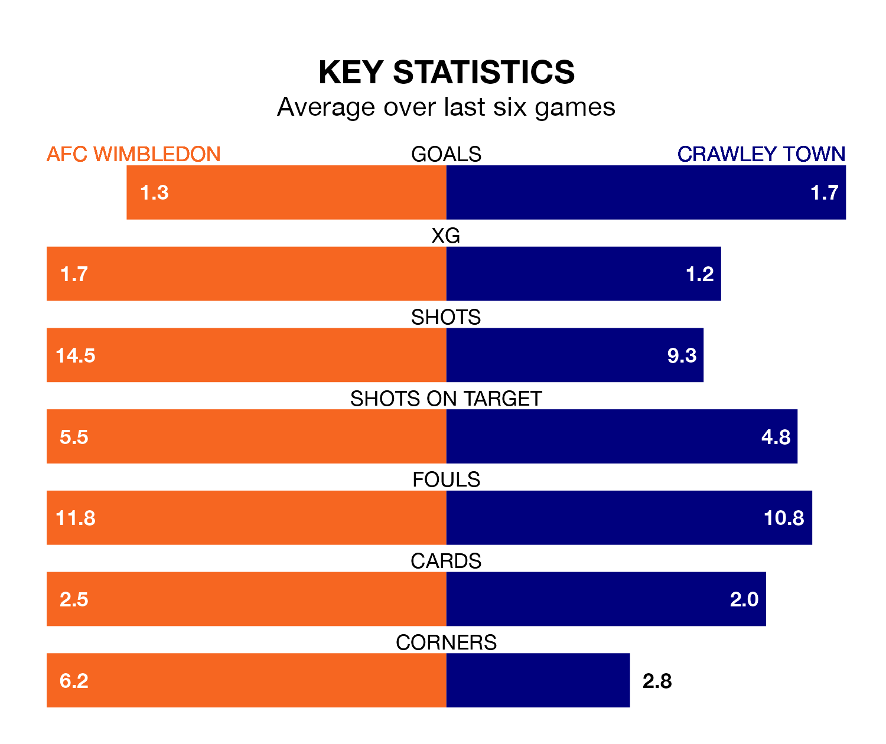

AFC Wimbledon are heavy favourites to keep all three points at home in Saturday's kick-off against Crawley Town.
The Dons, who sit 10th in EFL League Two with 26 games played, are priced at 1.5 to seal victory at the Cherry Red Records Stadium.
Sitting one place behind them in the table, Crawley are 5.8 to win with *Betting Company*, while the draw is at 4.4.
With 43 goals in 27 games so far this season, Crawley are scoring more than average in the league with 1.6 goals per game. But they are conceding more than average too, letting in 45 goals at a rate of 1.7 per game.
Wimbledon are also above average scorers, with 1.6 goals per game, compared to a league average of 1.5. They have conceded 1.2 goals per game.
In the last 10 years, Wimbledon and Crawley have played each other on seven occasions. Wimbledon won five of them and Crawley two.
On average, the Dons scored 1.6 goals and the Red Devils 1.0 in those matches.
Their last meeting was on December 22, when Wimbledon won 2-1 away.
In Alex Bass, the Dons can rely on one of the league's safest pair of hands. He has kept nine clean sheets in his 26 appearances this season in EFL League Two.
In Town's net, Corey Addai has three clean sheets in 20 games. He has conceded a goal every 60 minutes, 40% more often than the 84 minutes between goals for Bass.
The hosts are in mixed form in EFL League Two, with two wins and two draws from their last six games.
With three wins and three losses over that period, the Red Devils' form is slightly better – they have taken nine points from 18, compared to Wimbledon's eight.
Wimbledon's last match was on January 13, a 2-0 loss against Wrexham.
Crawley lost 1-0 against Salford City last time out, also on January 13.
Updated: 13:09 (UTC), 17/01/24